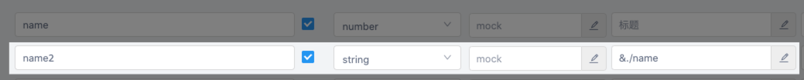

使用
生成代码
使用以下命令生成代码：
npx ytt
如果要使用自定义的配置文件：
npx ytt -c config/ytt.ts
编写统一请求函数
见统一请求函数。
调用接口请求函数
从 outputFilePath 导入你要调用的接口请求函数即可，接口请求函数的名称由配置 getRequestFunctionName 决定，如：
import { getUserInfo } from '../api'const updateUserInfo = async () => {const userInfo = await getUserInfo({id: 1,})console.log(userInfo)}
调用上传文件类接口
对于上传文件类接口，你需要将文件包装为一个 FileData 实例，如：
import { FileData } from 'yapi-to-typescript'import { uploadFile } from '../api'const changeAvatar = async (file: File) => {const res = await uploadFile({type: 'avatar',file: new FileData(file),})console.log(res)}
获取接口的请求数据、返回数据类型
如果你没动过 getRequestDataTypeName、getResponseDataTypeName 这两个配置，默认情况下，你可以这样获取接口的请求数据、返回数据类型：
import { getUserInfo, GetUserInfoRequest, GetUserInfoResponse } from '../api'interface CustomUserInfo extends GetUserInfoResponse {gender: 'male' | 'female' | 'unknown'}const customGetUserInfo = async (payload: GetUserInfoRequest,): Promise<CustomUserInfo> => {const userInfo = await getUserInfo(payload)return {...userInfo,gender:userInfo.sexy === 1 ? 'male' : userInfo.sexy === 2 ? 'female' : 'unknown',}}
如果你只想获得请求数据、返回数据下某个字段的类型，可以这样做：
import { GetUserInfoResponse } from '../api'type UserRole = GetUserInfoResponse['role']
命令行钩子 3.31.0+
可使用钩子在生成成功、失败、完毕时进行相关操作。
import { defineConfig } from 'yapi-to-typescript'export default defineConfig({// 生成配置},// 钩子{success() {// 生成成功时触发},fail() {// 生成失败时触发},complete() {// 生成完毕时触发（无论成功、失败）},},)
定义引用类型 3.32.0+
该功能适用于定义树等需要复用类型的场景。
YApi 本身是不支持定义引用类型的，本功能仅是在 YApi 自有功能上做了以下约定支持定义引用类型：
- 必须在 标题 栏定义（YApi 低版本没有 标题 栏，也可以在 备注 栏定义）；
- 必须以 & 开头；
- 引用路径规范和文件路径规范一致：
.表示当前级，..表示上一级，/在首位时表示根级，在中间时表示分割； - 引用数组的条目时必须加上
/0； - 定义引用类型后原本的类型定义将失效。
举例：
定义树

使用绝对路径引用

使用相对路径引用
引用数组条目